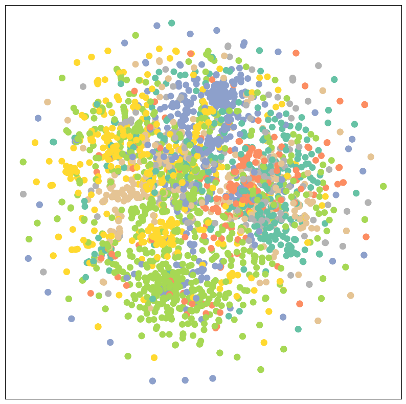

---
author: Mihir Agarwal
badges: true
categories:
- ML
- GNN
date: '2023-06-18'
output-file: 2023-06-18-Graph-Convoluntional-Layer-from-scratch.html
title: Graph Convoluntional Layer from scratch
toc: true
---
import pandas as pd
import numpy as np
import matplotlib.pyplot as plt
import seaborn as sns
import networkx as nx
import torch
import torch.nn as nn
import torch.nn.functional as F
import torch.nn.init as init
from torch_geometric.datasets import Planetoid
import torch.optim as optim
import matplotlib.animation as animation
from IPython.display import HTML
from sklearn.decomposition import PCA
import matplotlib.pyplot as plt
from sklearn.manifold import TSNEImporting Planetoid dataset - Cora
dataset = Planetoid(root='data/Planetoid', name='Cora')def visualize(h, color):
# Perform t-SNE dimensionality reduction
z = TSNE(n_components=2).fit_transform(h.detach().cpu().numpy())
# Create a scatter plot of the t-SNE embeddings
plt.figure(figsize=(10, 10))
plt.xticks([])
plt.yticks([])
plt.scatter(z[:, 0], z[:, 1], s=70, c=color, cmap="Set2")
plt.show()Visulization of the dataset
visualize(dataset[0].x, dataset[0].y)
# convert pytorch tensor to networkx graph
def to_networkx(data):
G = nx.Graph()
G.add_nodes_from(range(data.num_nodes))
G.add_edges_from(data.edge_index.t().tolist())
return GG = to_networkx(dataset[0])Creating the Adjacency Matrix
# Adjacency matrix
A = nx.adjacency_matrix(G).todense()
A = torch.tensor(A, dtype=torch.float)Creating a GCN layer
The GCN layer is defined as follows:
\({H}^{(l+1)} = \sigma \left( \mathbf{D}^{-\frac{1}{2}} {\mathbf{\hat{A}}} \mathbf{D}^{-\frac{1}{2}} \mathbf{H}^{(l)} \mathbf{W}^{(l)} \right)\)
where \(\mathbf{H}^{(l)}\) is the \(l^{th}\) layer of the GCN, \(\mathbf{A}\) is the adjacency matrix, {} is the adjacency matrix with self-connections added, \(\mathbf{D}\) is the degree matrix, and \(\mathbf{W}^{(l)}\) is the weight matrix for the \(l^{th}\) layer.
class GCN_Layer(nn.Module):
def __init__(self, in_features, out_features):
super(GCN_Layer, self).__init__()
self.linear = nn.Linear(in_features=in_features, out_features=out_features)
def gcn_layer(self, A, D):
A_hat1 = A + torch.eye(A.shape[0], device=A.device)
return torch.matmul(torch.matmul(D, A_hat1), D)
def forward(self, A, X):
D = torch.diag(torch.sum(A+torch.eye(A.shape[0], device=A.device), dim=0) ** (-0.5))
A_hat = self.gcn_layer(A, D)
return F.relu(torch.matmul(A_hat, self.linear(X)))Creating the model
The model consists of two GCN layers and a linear layer for the output. We have used ReLU as the activation function.
class GNNModel(nn.Module):
def __init__(self, in_features, out_features, classes):
super(GNNModel, self).__init__()
self.layer1 = GCN_Layer(in_features, out_features)
self.layer2 = GCN_Layer(out_features, out_features)
self.linear = nn.Linear(out_features, classes)
def forward(self, A, X):
H = self.layer1(A, X)
H = nn.ReLU()(H)
H = self.layer2(A, H)
H = nn.ReLU()(H)
H = self.linear(H)
return nn.Softmax(dim=1)(H)Training the model
X = torch.tensor(dataset[0].x, dtype=torch.float)
y = torch.tensor(dataset[0].y, dtype=torch.long)
in_features = X.shape[1] # Number of input features
hidden_dim = 64 # Number of hidden features
classes = 7 # Number of classes
gcn_layer = GNNModel(in_features, hidden_dim, classes)
criterion = nn.CrossEntropyLoss() # Use cross-entropy loss for classification
optimizer = torch.optim.Adam(gcn_layer.parameters(), lr=0.01)
num_epochs = 100
for epoch in range(num_epochs):
# Forward pass
output = gcn_layer(A, X)
# Compute the loss
loss = criterion(output, y) # Assume y contains the ground truth class labels
# Backward and optimize
optimizer.zero_grad()
loss.backward()
optimizer.step()
# Compute the accuracy
predicted_labels = output.argmax(dim=1)
accuracy = (predicted_labels == y).float().mean()
# Print the loss and accuracy for monitoring
if (epoch + 1) % 1 == 0:
print(f'Epoch [{epoch+1}/{num_epochs}], Loss: {loss.item():.4f}, Accuracy: {accuracy.item():.4f}')/tmp/ipykernel_18480/3700216626.py:1: UserWarning: To copy construct from a tensor, it is recommended to use sourceTensor.clone().detach() or sourceTensor.clone().detach().requires_grad_(True), rather than torch.tensor(sourceTensor).
X = torch.tensor(dataset[0].x, dtype=torch.float)
/tmp/ipykernel_18480/3700216626.py:2: UserWarning: To copy construct from a tensor, it is recommended to use sourceTensor.clone().detach() or sourceTensor.clone().detach().requires_grad_(True), rather than torch.tensor(sourceTensor).
y = torch.tensor(dataset[0].y, dtype=torch.long)Epoch [1/100], Loss: 1.9451, Accuracy: 0.1544
Epoch [2/100], Loss: 1.9375, Accuracy: 0.2585
Epoch [3/100], Loss: 1.9232, Accuracy: 0.3386
Epoch [4/100], Loss: 1.8973, Accuracy: 0.3032
Epoch [5/100], Loss: 1.8595, Accuracy: 0.3024
Epoch [6/100], Loss: 1.8221, Accuracy: 0.3021
Epoch [7/100], Loss: 1.7975, Accuracy: 0.3024
Epoch [8/100], Loss: 1.7573, Accuracy: 0.3619
Epoch [9/100], Loss: 1.6980, Accuracy: 0.4996
Epoch [10/100], Loss: 1.6558, Accuracy: 0.5971
Epoch [11/100], Loss: 1.6148, Accuracy: 0.6300
Epoch [12/100], Loss: 1.5620, Accuracy: 0.6713
Epoch [13/100], Loss: 1.5196, Accuracy: 0.6961
Epoch [14/100], Loss: 1.4932, Accuracy: 0.7212
Epoch [15/100], Loss: 1.4673, Accuracy: 0.7430
Epoch [16/100], Loss: 1.4392, Accuracy: 0.7633
Epoch [17/100], Loss: 1.4154, Accuracy: 0.7722
Epoch [18/100], Loss: 1.4006, Accuracy: 0.7762
Epoch [19/100], Loss: 1.3909, Accuracy: 0.7766
Epoch [20/100], Loss: 1.3782, Accuracy: 0.7884
Epoch [21/100], Loss: 1.3642, Accuracy: 0.8209
Epoch [22/100], Loss: 1.3541, Accuracy: 0.8401
Epoch [23/100], Loss: 1.3437, Accuracy: 0.8431
Epoch [24/100], Loss: 1.3326, Accuracy: 0.8468
Epoch [25/100], Loss: 1.3253, Accuracy: 0.8490
Epoch [26/100], Loss: 1.3207, Accuracy: 0.8479
Epoch [27/100], Loss: 1.3164, Accuracy: 0.8527
Epoch [28/100], Loss: 1.3126, Accuracy: 0.8545
Epoch [29/100], Loss: 1.3102, Accuracy: 0.8564
Epoch [30/100], Loss: 1.3076, Accuracy: 0.8586
Epoch [31/100], Loss: 1.3045, Accuracy: 0.8634
Epoch [32/100], Loss: 1.3019, Accuracy: 0.8648
Epoch [33/100], Loss: 1.3002, Accuracy: 0.8671
Epoch [34/100], Loss: 1.2982, Accuracy: 0.8674
Epoch [35/100], Loss: 1.2962, Accuracy: 0.8693
Epoch [36/100], Loss: 1.2948, Accuracy: 0.8704
Epoch [37/100], Loss: 1.2928, Accuracy: 0.8719
Epoch [38/100], Loss: 1.2893, Accuracy: 0.8741
Epoch [39/100], Loss: 1.2820, Accuracy: 0.8848
Epoch [40/100], Loss: 1.2654, Accuracy: 0.9066
Epoch [41/100], Loss: 1.2517, Accuracy: 0.9206
Epoch [42/100], Loss: 1.2573, Accuracy: 0.9147
Epoch [43/100], Loss: 1.2534, Accuracy: 0.9202
Epoch [44/100], Loss: 1.2437, Accuracy: 0.9287
Epoch [45/100], Loss: 1.2401, Accuracy: 0.9306
Epoch [46/100], Loss: 1.2376, Accuracy: 0.9321
Epoch [47/100], Loss: 1.2363, Accuracy: 0.9324
Epoch [48/100], Loss: 1.2352, Accuracy: 0.9350
Epoch [49/100], Loss: 1.2325, Accuracy: 0.9376
Epoch [50/100], Loss: 1.2295, Accuracy: 0.9394
Epoch [51/100], Loss: 1.2271, Accuracy: 0.9413
Epoch [52/100], Loss: 1.2255, Accuracy: 0.9420
Epoch [53/100], Loss: 1.2252, Accuracy: 0.9424
Epoch [54/100], Loss: 1.2252, Accuracy: 0.9424
Epoch [55/100], Loss: 1.2231, Accuracy: 0.9457
Epoch [56/100], Loss: 1.2214, Accuracy: 0.9468
Epoch [57/100], Loss: 1.2211, Accuracy: 0.9468
Epoch [58/100], Loss: 1.2209, Accuracy: 0.9468
Epoch [59/100], Loss: 1.2200, Accuracy: 0.9479
Epoch [60/100], Loss: 1.2188, Accuracy: 0.9490
Epoch [61/100], Loss: 1.2185, Accuracy: 0.9494
Epoch [62/100], Loss: 1.2184, Accuracy: 0.9501
Epoch [63/100], Loss: 1.2179, Accuracy: 0.9501
Epoch [64/100], Loss: 1.2170, Accuracy: 0.9505
Epoch [65/100], Loss: 1.2165, Accuracy: 0.9505
Epoch [66/100], Loss: 1.2164, Accuracy: 0.9505
Epoch [67/100], Loss: 1.2162, Accuracy: 0.9505
Epoch [68/100], Loss: 1.2159, Accuracy: 0.9509
Epoch [69/100], Loss: 1.2156, Accuracy: 0.9509
Epoch [70/100], Loss: 1.2153, Accuracy: 0.9516
Epoch [71/100], Loss: 1.2151, Accuracy: 0.9520
Epoch [72/100], Loss: 1.2148, Accuracy: 0.9520
Epoch [73/100], Loss: 1.2147, Accuracy: 0.9520
Epoch [74/100], Loss: 1.2145, Accuracy: 0.9516
Epoch [75/100], Loss: 1.2143, Accuracy: 0.9520
Epoch [76/100], Loss: 1.2142, Accuracy: 0.9520
Epoch [77/100], Loss: 1.2140, Accuracy: 0.9520
Epoch [78/100], Loss: 1.2139, Accuracy: 0.9520
Epoch [79/100], Loss: 1.2137, Accuracy: 0.9520
Epoch [80/100], Loss: 1.2136, Accuracy: 0.9520
Epoch [81/100], Loss: 1.2134, Accuracy: 0.9524
Epoch [82/100], Loss: 1.2132, Accuracy: 0.9531
Epoch [83/100], Loss: 1.2130, Accuracy: 0.9535
Epoch [84/100], Loss: 1.2128, Accuracy: 0.9535
Epoch [85/100], Loss: 1.2126, Accuracy: 0.9531
Epoch [86/100], Loss: 1.2126, Accuracy: 0.9531
Epoch [87/100], Loss: 1.2125, Accuracy: 0.9538
Epoch [88/100], Loss: 1.2125, Accuracy: 0.9538
Epoch [89/100], Loss: 1.2124, Accuracy: 0.9535
Epoch [90/100], Loss: 1.2123, Accuracy: 0.9535
Epoch [91/100], Loss: 1.2123, Accuracy: 0.9535
Epoch [92/100], Loss: 1.2122, Accuracy: 0.9535
Epoch [93/100], Loss: 1.2121, Accuracy: 0.9535
Epoch [94/100], Loss: 1.2120, Accuracy: 0.9538
Epoch [95/100], Loss: 1.2120, Accuracy: 0.9538
Epoch [96/100], Loss: 1.2119, Accuracy: 0.9538
Epoch [97/100], Loss: 1.2118, Accuracy: 0.9542
Epoch [98/100], Loss: 1.2117, Accuracy: 0.9542
Epoch [99/100], Loss: 1.2116, Accuracy: 0.9542
Epoch [100/100], Loss: 1.2115, Accuracy: 0.9542output = gcn_layer(A, X)
y_pred = output.argmax(dim=1)
y = dataset[0].y
print(f'Accuracy of GCN model: {float(((y == y_pred).sum()) / len(y))*100}')Accuracy of GCN model: 95.42097449302673